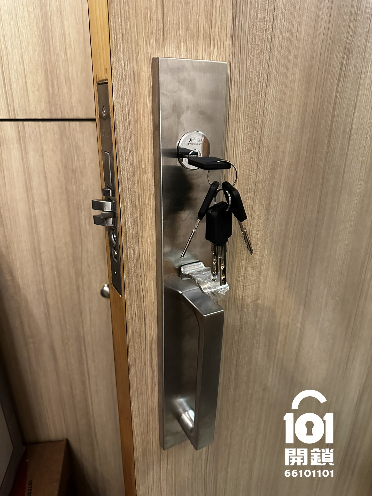
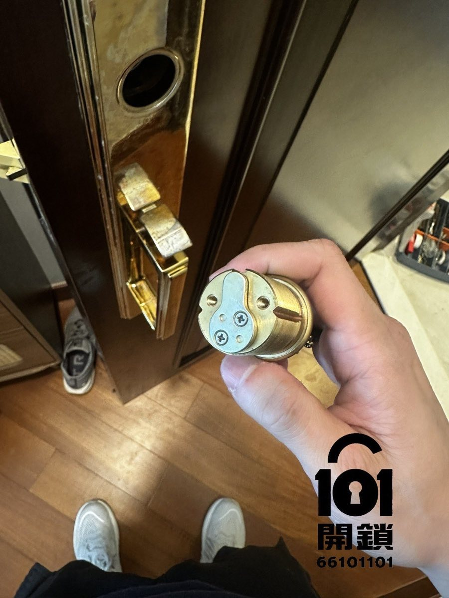
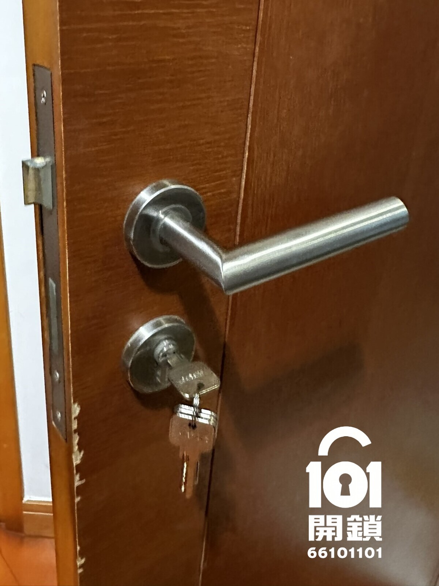
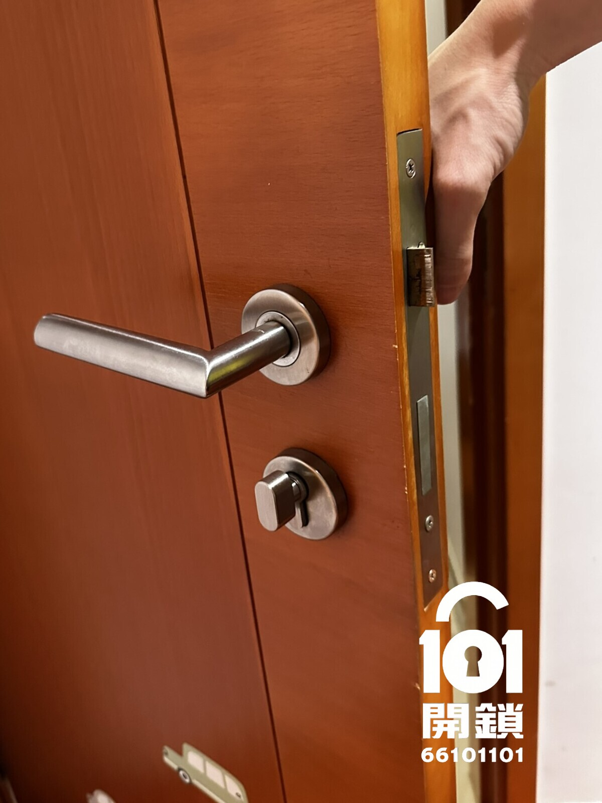
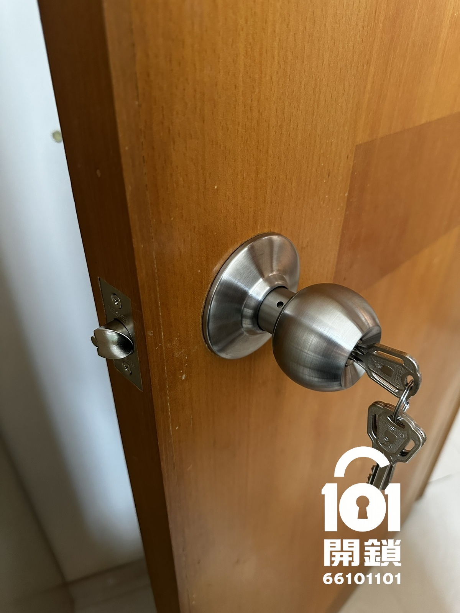
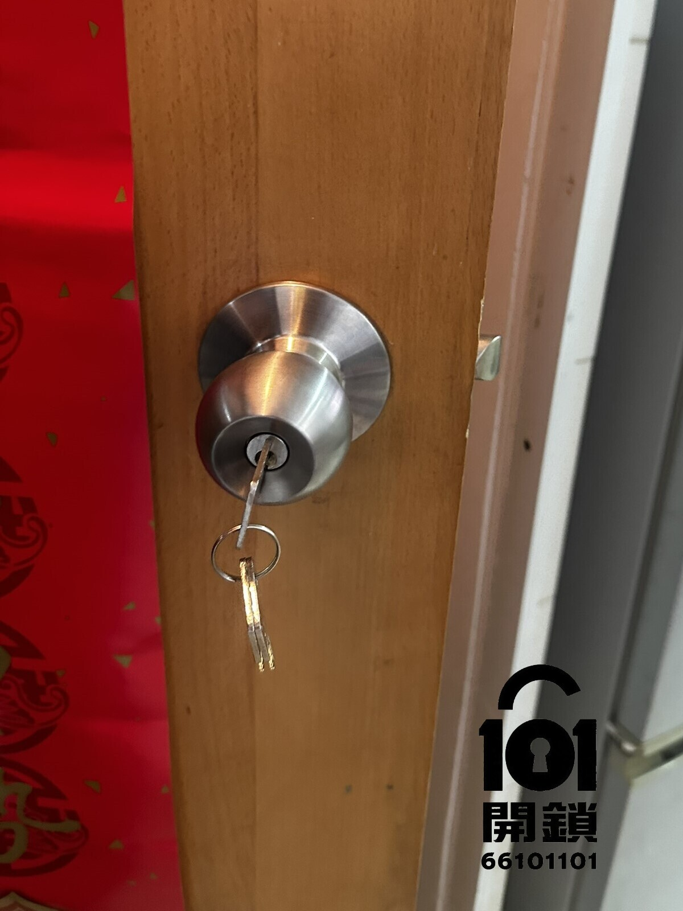
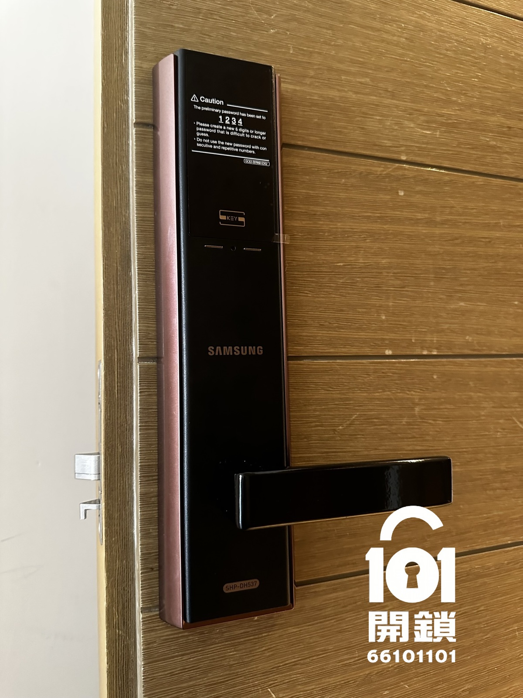
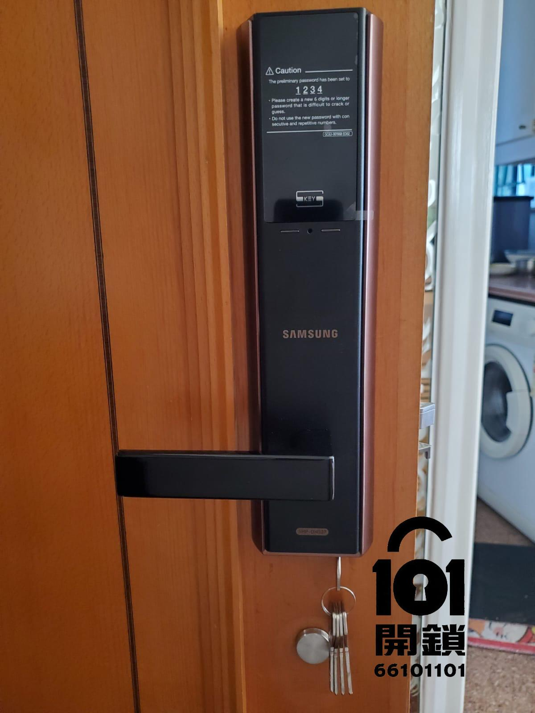
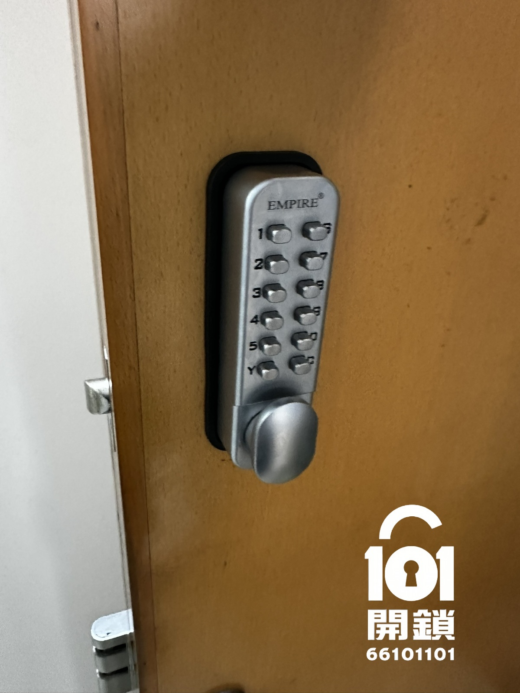
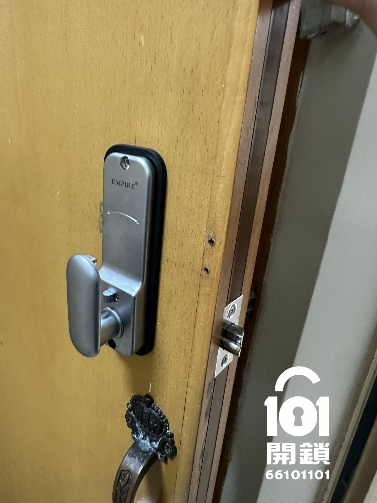

搬入新單位
無法確認過往鎖匙數量時，可評估更換鎖膽或整套門鎖。
無法確認過往鎖匙數量時，可評估更換鎖膽或整套門鎖。
按遺失地點、鎖匙是否附有地址及保安風險決定處理優先度。
鎖匙難轉、鎖舌回彈不順或門框移位，應先判斷是鎖件還是門體問題。
101開鎖提供香港上門換鎖、換門鎖及換鎖膽服務。以下展示美式鎖、歐式鎖、珠鎖、電子鎖及機械密碼鎖的實際安裝相片；選擇新門鎖前，仍須核對門厚、鎖體、背距及原有開孔。
美式鎖常見於住宅木門；換鎖時需檢查鎖膽、鎖體、鎖舌及飾板尺寸是否配合。


歐式鎖可按現有鎖體狀況只換歐式鎖膽，或連門鎖把手及鎖體一併更換。


珠鎖適用於部分房門及室內門；更換珠鎖前要確認門厚、鎖舌背距和開孔尺寸。


電子鎖安裝需核對門身結構、鎖體孔位、開門方向、供電方式及後備機械鎖匙。


機械密碼鎖毋須電池，適合部分住宅或室內門；安裝前要確認門厚、把手方向與鎖舌位置。


鎖體和鎖舌運作正常，只需要令舊鎖匙失效或提升鎖膽級別。
鎖舌、傳動或內部零件磨損，單換鎖膽不能解決問題。
需要增加鎖點、改變操作方式或由機械鎖轉用電子鎖時，須整體評估門身和門框。
視乎新舊鎖具尺寸、背距及鎖體結構。相片只能初步判斷，準確方案仍需量度。
不同品牌和型號的原裝匙數不同，報價時應確認包含匙數及能否後配。
門鎖設有14日101開鎖公司保養；實際保障範圍應以報價及安裝時確認的條款為準。
以下案例展示不同地區及鎖具的更換情況；實際零件、做法及收費須按現場尺寸與狀況確認。